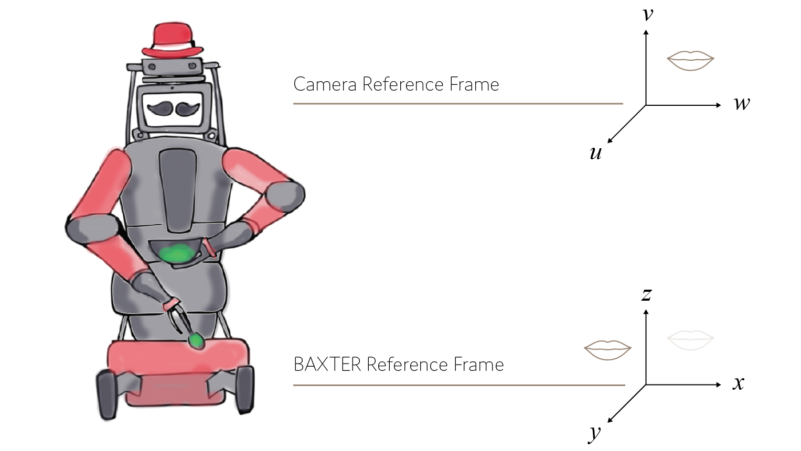

Feeding Robot
Programming BAXTER to feed people autonomously.
2018 Group Project with Ina Roll Backe, Tilly Supple, Grace Chin and Lydia Dynes-Martinez
The objective of this project was to teach BAXTER the robot to feed people food. BAXTER
could identify food, scoop it up, identify an open mouth and navigate the food there.
I was involved in the perception part of the project. Using a RGB-D camera and OpenCV
(open source computer vision library) I was able determine the
three dimensional co-ordinates of a mouth and whether it was open or closed.
Video

Perception
A pre-trained facial recognition machine learning library was used to identify key facial landmarks using the data from a RGB-D camera.

The co-ordinates of the mouth had to be mapped from the camera to the robot reference frame.
Calibration
X,Y and Z co-ordinates of the mouth were then calibrated from the reference frame of the camera to that of the robot so that it could be used for motion planning of BAXTER's arm.
